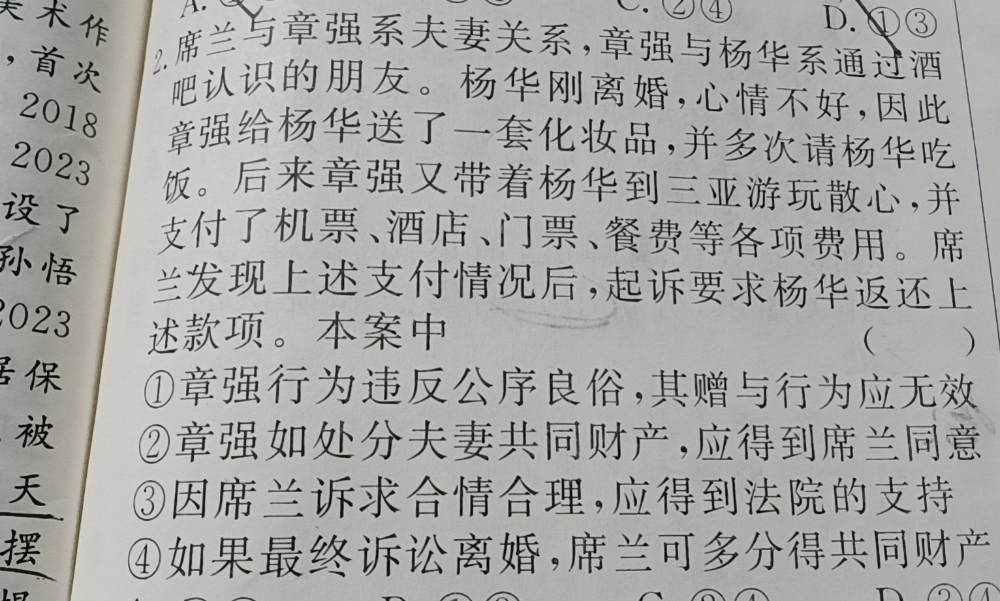
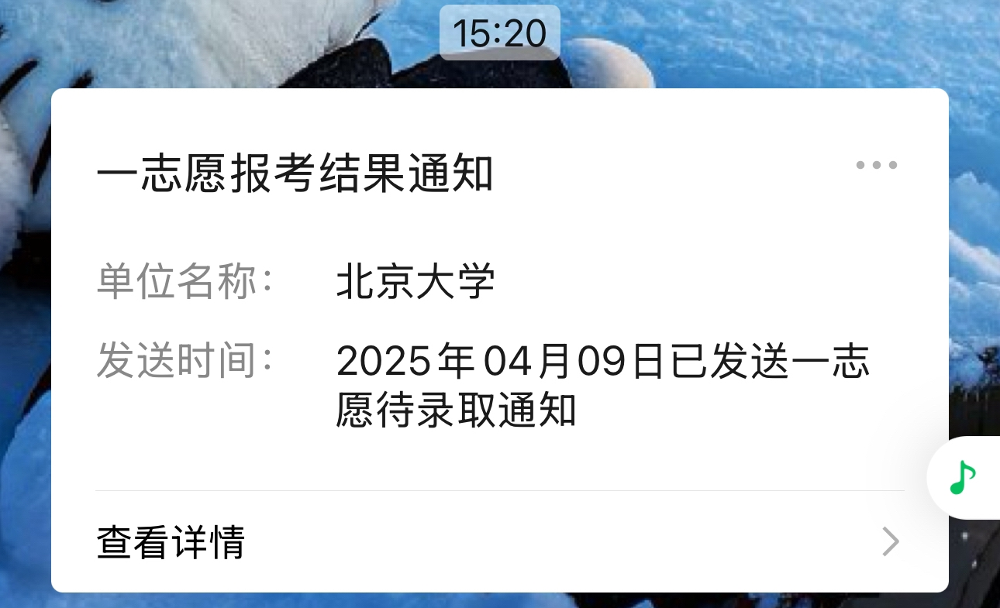
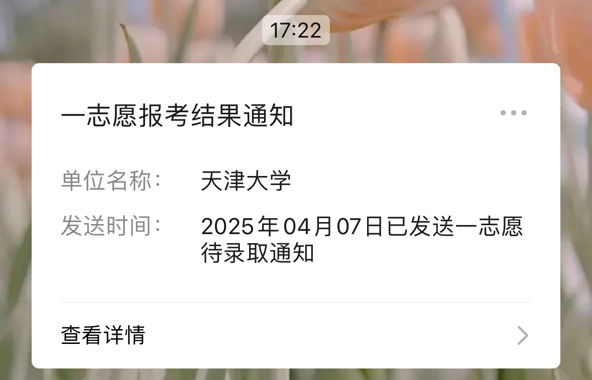
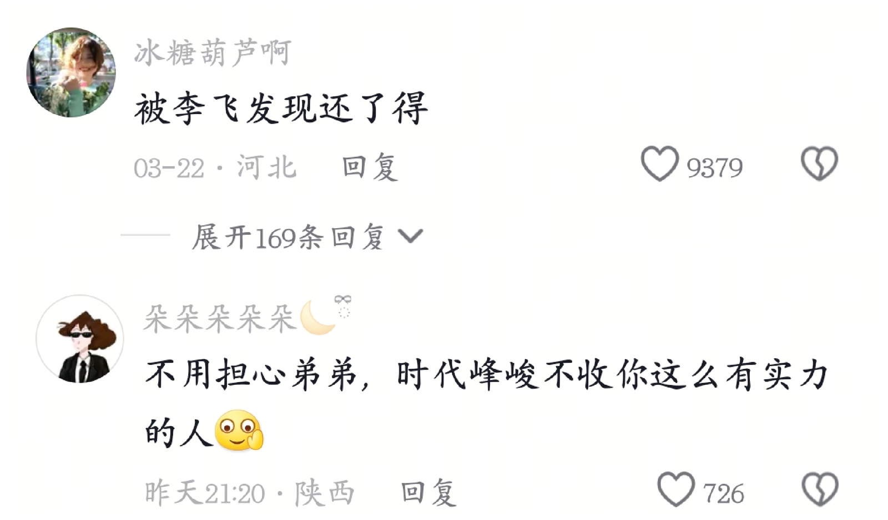
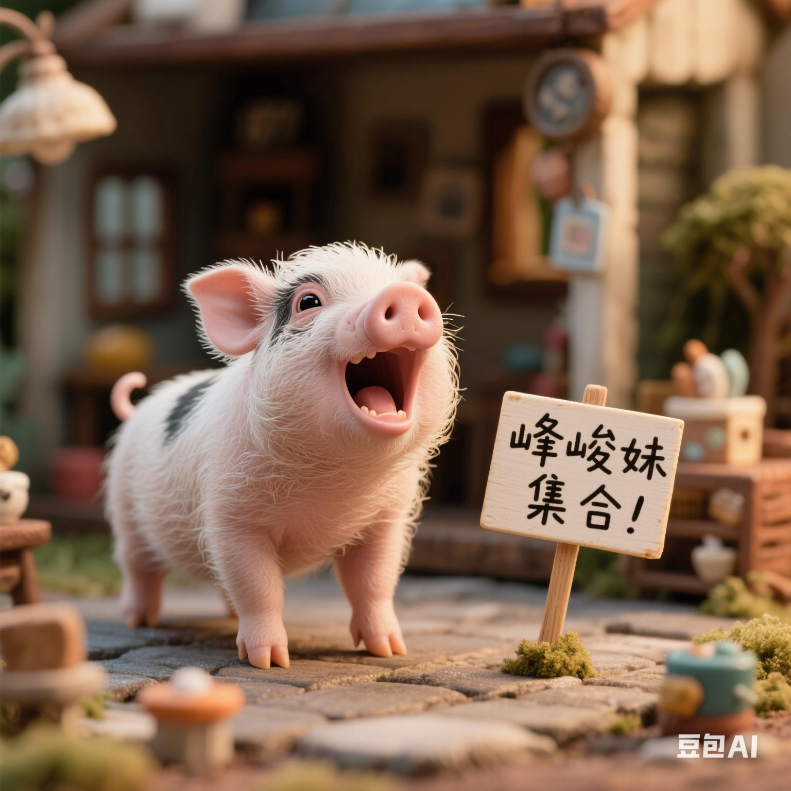
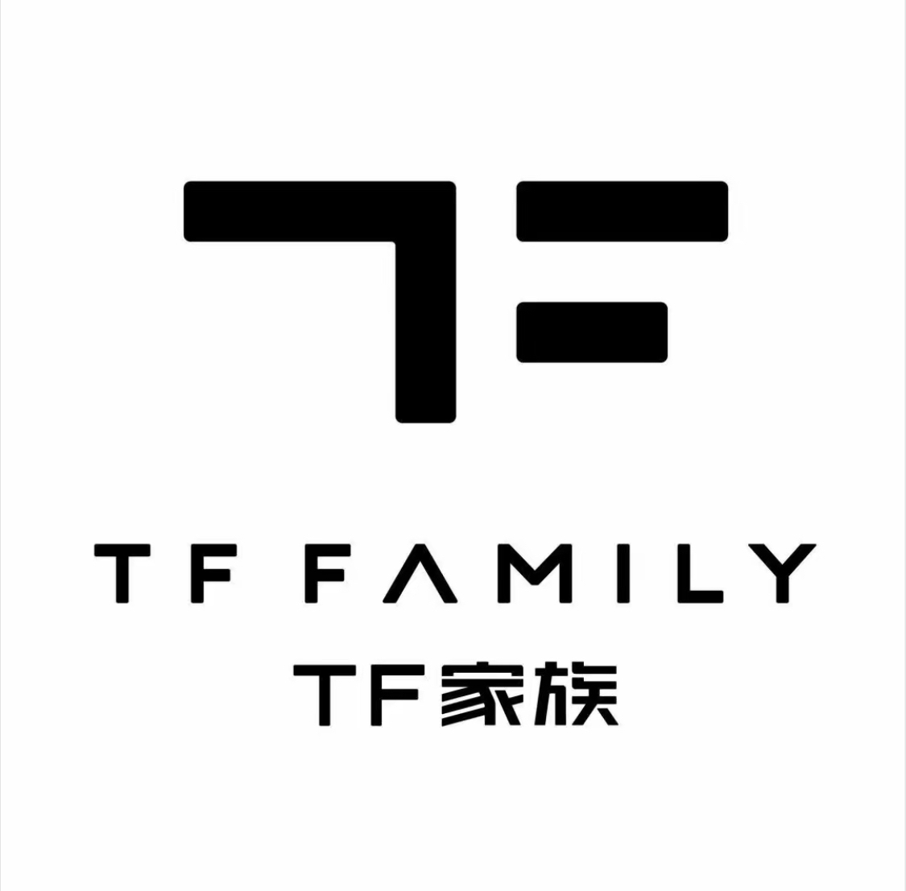
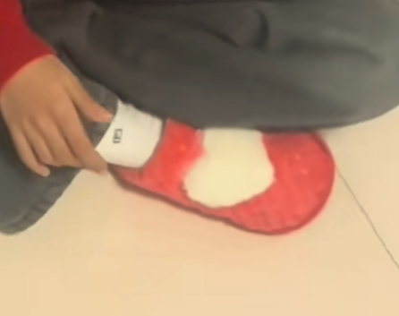
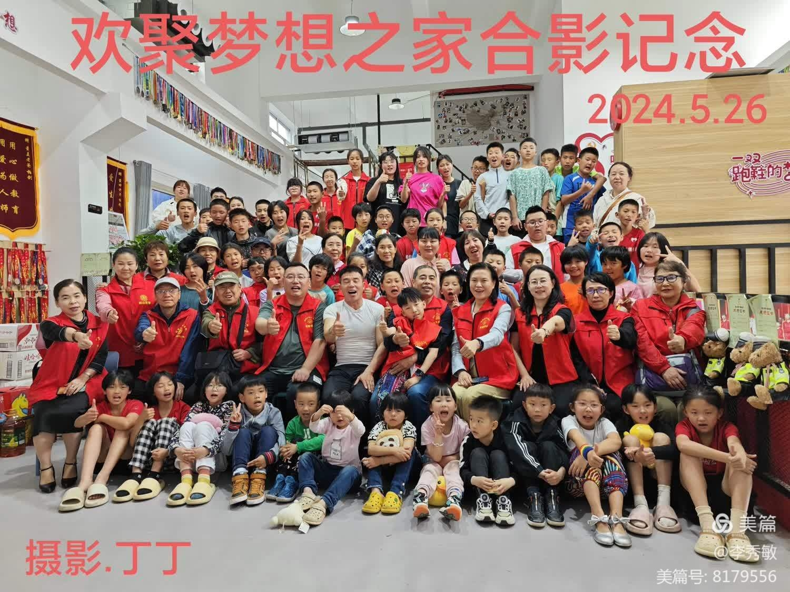

这家伙在整条街横行霸道[捂脸][捂脸][捂脸]
那时91还是普通的数字[泣不成声]
当时不会扣[流泪]
还得是老虎来
谁有白姨抖音号，我没开玩笑[微笑]
国梁是对的，严点好严点好啊[笑哭]
陈玘一起犯事那个谁被送去部队的叫啥
只有我觉得大头甩拍那一下很帅吗？
真的不能太依赖高科技，生命必须自己掌握，不管电车还是油车上了高速方向盘必须自己掌握，愿逝者一路走好[感谢]，
这么说吧女朋友的美照我没多少，丑照快四千张[害羞]
你把他惹生气了，他就让你把照片摇正了[看]
难怪你这么有钱，家教这么好，人又行大善，必定代代福。
法官也是不容易[晕][晕][晕]
孩子：excuse me?
没bug硬卡[泪奔][泪奔][泪奔]
好干的视频
很好，全猜错了
最终判决都挺合理的
最惨的是小孩
视频制作的不错，直观简洁明了
政治会考吗？[微笑]
二审不愧是二审
离神很近，离人很远，俗称神近
绵绵的羊 家
果然感情问题不分男女
说是争夺孩子，本质是争夺财产继承权。
感觉就是，谁之前抚养 就把抚养权判给谁，对孩子和抚养的人都挺好
分娩者为母
政治题[比心] 
@Nagi 真复杂，但感觉都还合理诶
很公正！
以孩子为主才对
很正常的事情 理性看待[赞]
为啥身边离婚孩子，男的都争取到了抚养权
最强大脑吗？
法律登记在谁名下 就是谁的孩子吧
[流泪][流泪][流泪][流泪]下一程 我会好好出发 
我考上啦！！！专本硕[流泪][流泪][流泪]潺潺流水终于流过了群山一座座
终于有了天大的好消息[快哭了] 
上岸了，[流泪]我上岸了
留个句号。日本人帮我挡了。。。。。
躲我身后一个逗号接了
中国人进来避难[玫瑰][玫瑰][玫瑰]
学生党不小心进入，祝全家平安[玫瑰][玫瑰]
猪血可以用来防潮，五点关门是因为人家是事业编五点下班，看到宫女是因为四氧化三铁在雷雨会产生录像效应[捂脸][OK]
正常人集合[憨笑][OK]
我们老师说是因为宫墙漆里面含有四氧化三铁，会发生录像带效应[发呆][发呆][发呆]
得了吧，北京故宫使用猪血的传统主要与其建筑材料和文化背景有关。猪血与石灰等材料混合后，具有超强的粘合力和抗水性能，能够增强建筑的耐久性和稳定性，防止古建筑受潮和虫蛀。这种混合物被称为“猪血腻子”，广泛用于故宫的宫墙和柱子的修缮，封建迷信啥呀？[捂脸]
看啥？你们又遇不到。
笑死了 庄家最有种的男人姓向
玲姐:早知道他那么勇且正直，要把他接来了！[泪奔]
全剧三大好男人：林武峰，向鹏飞，林栋哲
晓婷上学之后黄玲说她没有靠山了，鹏飞就变成了她的靠山 真好
庄图南真的服了，每次棍子都没打到他身上，但是每次他都能替被打的人原谅他阿爹阿婆，天天和稀泥[微笑][微笑][微笑]
而且，庄图南我是最不懂的！！！！！
鹏飞简直就是观众嘴替
我们这一路走来真的不容易
天选R＆B圣体[憨笑][憨笑][强壮]
hhhh三步之内必有解药[不失礼貌的微笑] 
还在走读文化这条弯路吗孩子[泪奔]
唱得真好[爱心]
唱得不错赐冠[赞]
小朋友不建议这么唱，因为小朋友声带还在发育，这么唱容易伤大人自尊。
被李飞发现还了得
俊峰妹放心哈 你们李飞爷爷不收这么有实力的[捂脸]不用替主播担心哈[捂脸]
别说注意李飞了 去时代峰峻只会耽误这孩子[憨笑]
唱得太棒了[鼓掌]怎么联系上这个孩子[比心]我想让他资助我上音乐学院，望提供联系方式[玫瑰][玫瑰][玫瑰]
我的妈0人提时代峰峻[憨笑][玫瑰][玫瑰][玫瑰]
弟弟小心一个叫李飞的爷爷
别看他现在唱的这么好 其实他还年轻还有大好的前途[黑脸]
第一句像王俊凯小时候谁懂？[憨笑][强壮]
我怎么上不如老，下不如小[憨笑][强壮]
每次刷到才艺比较厉害的小孩[憨笑] 评论区： 
孩子听我的 遇到用这种头像的人来找你一定要跑的远远的[猪头] 
声音唱法真的有种王俊凯小时候的感觉[流泪][流泪][流泪]
他的鞋引起了我的注意[思考] 
不需要两只老虎过渡一下吗[泣不成声][泣不成声]
原来他带孩子们练长跑是因为大部分其他人不愿意练[流泪]
是B太帮助了他，没有B太，他背一身债，无人关注，如今终于翻身了，中国好人柏剑[赞][赞][赞]
以前他们只能吃土豆白菜，捡人家上供的贡品，真的是看哭了，还好现在慢慢的好起来了。
有幸去过一次，他们真的很苦，孩子们穿的衣服都好破[流泪]，但是柏剑老师给他们养的特别好，他们都很开心[眼含热泪] 
中国女有张桂梅，男有柏剑
该拍成电影了
@hove 大孩40圈小孩30圈
除了lazy还有poor的原因[微笑][微笑]
im no money～
Read more: